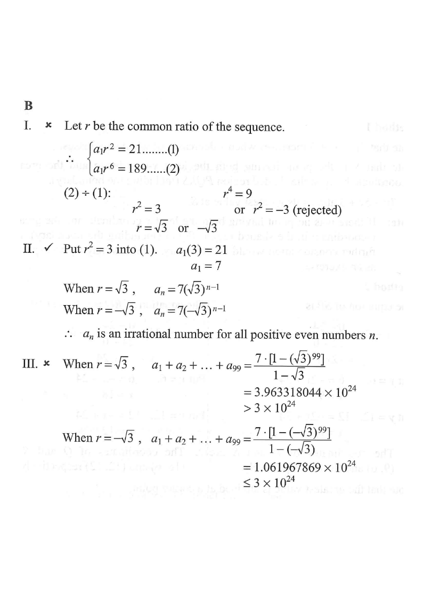

Step 1 — Given information: $a_3=21$, $a_7=189$.
Let $a_n$ be the $n$th term of a geometric sequence. If $a_3=21$ and $a_7=189$, which of the following must be true?
I. The common ratio of the sequence is less than 1.
II. Some of the terms of the sequence are irrational numbers.
III. The sum of the first 99 terms of the sequence is greater than $3\times10^{24}$.
A. I only
B. II only
C. I and III only
D. II and III only

For a geometric sequence, $a_n = a_1 r^{\,n-1}$.
$$a_3 = a_1 r^{2} = 21 \quad \cdots (1)$$
$$a_7 = a_1 r^{6} = 189 \quad \cdots (2)$$
Hint: write both given terms using $a_1$ and $r$.
$(2)\div(1)$:
$$\frac{a_1r^{6}}{a_1r^{2}} = \frac{189}{21} \Rightarrow r^{4}=9 \Rightarrow r^{2}=3 \ \text{ or }\ r^{2}=-3\,(\text{rejected})$$
So the common ratio is $r=\sqrt3$ or $r=-\sqrt3$.
Hint: $r^2=3$ gives two real values of $r$; $r^2=-3$ has no real root.
Put $r^{2}=3$ into $(1)$: $a_1(3)=21 \Rightarrow a_1=7$.
$$a_n = 7(\sqrt3)^{\,n-1} \quad \text{or} \quad a_n = 7(-\sqrt3)^{\,n-1}$$
Hint: substitute $r^2=3$ back; the value of $a_1$ is the same for both cases.
Possible values: $r=\sqrt3 \approx 1.732$ or $r=-\sqrt3 \approx -1.732$.
Neither is less than $1$ in absolute magnitude (and $r=\sqrt3>1$).
$\Rightarrow$ Statement I is false.
Hint: "common ratio less than 1" fails since $\sqrt3>1$.
When $r=\sqrt3$: $a_n = 7(\sqrt3)^{\,n-1}$.
For all positive even $n$, $(\sqrt3)^{\,n-1}$ is a power of an irrational number, so $a_n$ is irrational.
$\Rightarrow$ Statement II is true.
Hint: $\sqrt3$ is irrational; multiplying by a rational $7$ keeps it irrational.
Case $r=\sqrt3$:
$$S_{99}=7\cdot\frac{1-(\sqrt3)^{99}}{1-\sqrt3}\approx 3.963318044\times10^{24} > 3\times10^{24}$$
Case $r=-\sqrt3$:
$$S_{99}=7\cdot\frac{1-(-\sqrt3)^{99}}{1-(-\sqrt3)}\approx 1.061967869\times10^{24} \le 3\times10^{24}$$
Since the two cases give different conclusions, statement III is not necessarily true.
Hint: "must be true" requires it to hold for all valid sequences.
Only statement II must be true.
Therefore the answer is B.
Hint: eliminate options containing I or III.